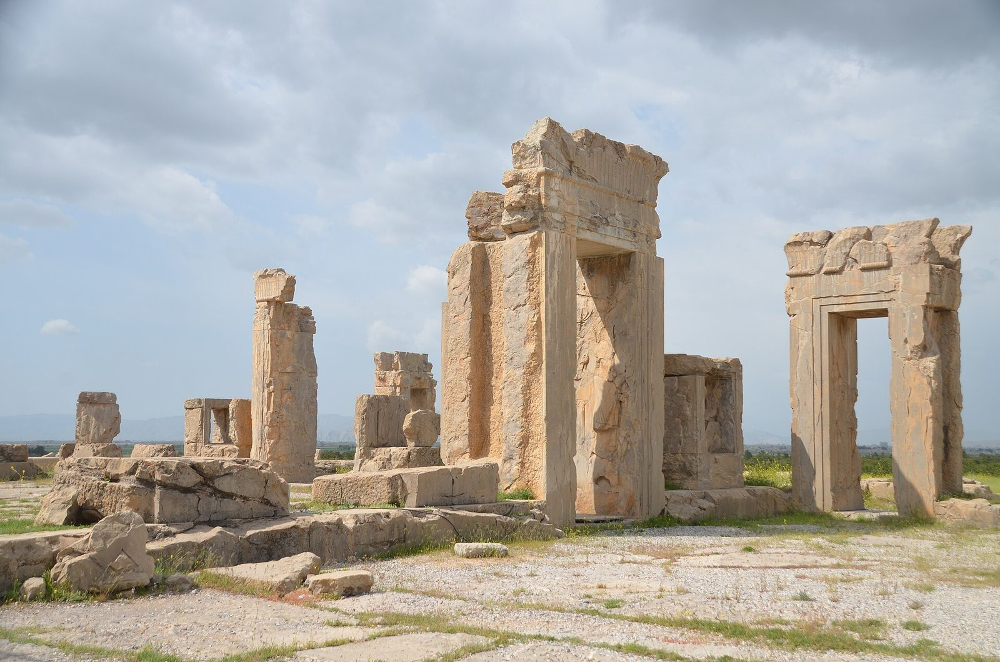
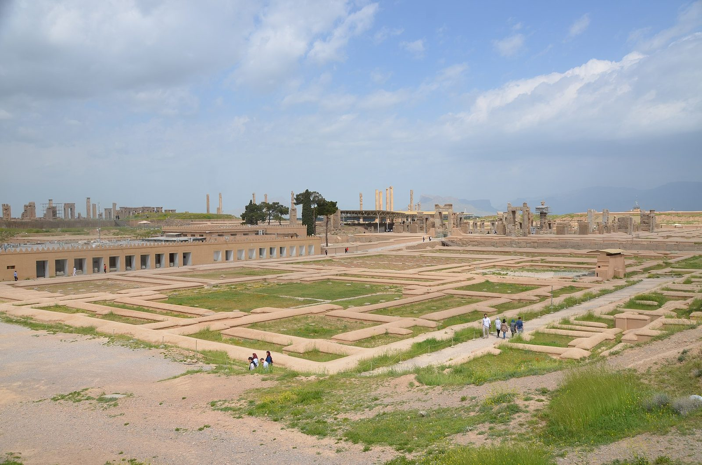

Unit 2 · Persepolis · Lesson 13
Deliberate or drunken? The debate and the archaeology
Did Alexander plan the burning of Persepolis, or did it begin at a drinking party? What can the ruins themselves tell us?
Year 11 Ancient History · Present with → or space · Read on a phone with R

Review · books closed · 6 minutes · press K for the timer
Six questions from Lessons 1–12
- According to the Behistun inscription, how did Darius I become king, and why do historians question it? Darius says that in 522 BCE, by the grace of Ahuramazda, he killed Gaumata, a Magian who was pretending to be Bardiya, son of Cyrus. It is his own account, the winner’s: historians cannot rule out that the man he killed was the real Bardiya.
- What do the Apadana stairway reliefs show, and what are they reliable for? 23 delegations from across the empire bringing gifts (some identifications are debated). Reliable for how the king wanted his empire to be seen, orderly and willing; not for how the subject peoples felt.
- What are the Fortification Tablets? Give their dates, where they were found and their main language. Tens of thousands of clay tablets (509–493 BCE) recording rations, workers and travel, found in 1933 in the fortification wall; mostly Elamite, some Aramaic.
- What is Arrian’s version of the burning? Deliberate: Alexander burned the palace although Parmenio advised him to preserve it, saying he wanted vengeance for the Persian invasion of Greece. Arrian adds that he does not think Alexander acted with prudence: it was not “any retributive penalty at all on the ancient Persians”.
- What is Diodorus’s version of the burning? At a drunken feast the Athenian courtesan Thaïs urged Alexander to set fire to the palaces; he led a revel (the comus) and threw the first torch, and she threw the second.
- When was the battle of Gaugamela, and why does it matter here? 331 BCE (1 October 331, Livius): Alexander defeated Darius III, opening the way to Babylon, Susa and Persepolis.
Mark your own answers in a different colour. Which question did you find hardest?
Learning intentions and success criteria · 2 minutes
Today’s goals
- Evaluate interpretations of Alexander’s role in the destruction of Persepolis
- Write an interpretation paragraph using Judge → Evidence → Analyse → Evaluate → Resolve
- explain two modern interpretations of the burning and the evidence for each
- use archaeological evidence to test the ancient accounts
- write a paragraph that judges, uses three types of evidence, weighs a rival view and resolves
Syllabus outcomes: AH-11-02 proposes ideas about the varying causes and effects of events and developments · AH-11-05 analyses different types of sources for evidence to support a historical account or argument · AH-11-06 explains differing interpretations and representations of the past · AH-11-07 communicates historical understanding, applying historical knowledge, terms and concepts. Life Skills: AH-LS-04 recognises causes and effects of events or developments · AH-LS-09 identifies different interpretations of the past.
Note-making · the routine for the whole course
How to structure your notes
questions and key terms, written after
short phrases, arrows (→ leads to), abbreviations (c. = about; BCE = Before the Common Era)
- 1Rule up the page firstA cue column about a quarter of the page wide; title and date at the top; room for a summary at the bottom.
- 2Listen and look, then writeDon’t copy while a slide is being explained. Phrases, not sentences.
- 3Write your own notes at each ✎ checkpointThen compare with the model notes, one row at a time. Add what you missed in a second colour.
- 4Write the cue questions afterwardsUse exam verbs: explain, analyse, assess. To revise, cover your notes and answer the cues.
- 5Finish with a three-sentence summaryTwo checkpoints today: the evidence and the views · the five moves. Your colour-coded model paragraph goes beside your notes.
Key vocabulary · add to the unit word wall
Words for the debate
| The event | Meaning |
|---|---|
| Gaugamela | The battle (331 BCE) in which Alexander defeated Darius III, opening the way to Persepolis. |
| Thaïs | An Athenian woman who, according to Diodorus, Curtius and Plutarch, urged the burning of the palace at a feast. |
| Vulgate tradition | The group of ancient Alexander histories (Diodorus, Curtius and others) thought to share a lost source, often identified as Cleitarchus. |
| conflagration | A large, destructive fire (the excavators’ word for what destroyed the buildings). |
| The debate | Meaning |
|---|---|
| Premeditated | Planned in advance. |
| Interpretation | A historian’s explanation or judgement about the past, based on evidence. |
| evaluative modality | Words that show how certain the writer is: may, probably, is likely to, on balance. |
1 · The archaeology · I do — what the excavators found · one press per building
Where the fire burned
- 1Apadana: burntSchmidt found it “destroyed by a violent conflagration”: the heat baked the mud-brick walls light red, and the floor was “burned and blackened”; the roof beams were probably cedar.
- 2Hall of a Hundred Columns: burntIts floor lay under ashes and charcoal of cedar roof beams; “there is no doubt that the collapse of the Throne Hall and its portico was caused by a conflagration”.
- 3Treasury: emptied, then burnedHall 41, one of its two great halls, was “totally destroyed by a violent conflagration”; the other was only scorched by burning debris from next door (more on the Treasury next).
- 4Hadish: badly destroyedHardly anything of its stone columns was left on its platform: their pieces lay in the Harem below, where they “fell or were hurled down”. Schmidt suggested it “may” have been “destroyed with particularly vindictive thoroughness”, though later stone-robbing may explain some loss. He reports no burnt layer.
- 5But not everywhereParts of the Tripylon show no traces of burning; Livius describes the Tachara, Darius’s palace, as far less damaged.
1 · The archaeology · I do → cold call
The Treasury: emptied, then burned

- Who dug it: Erich Schmidt’s expedition from the Oriental Institute, Chicago, 1935–39
- What it was: the king’s storehouse and armoury, in the south-east of the terrace
… might also be headed “Crumbs that Alexander left.” The Macedonians were thorough in cleaning out the treasure house of Persepolis. [On Hall 41, one of two treasure halls:] … Hall 41 had been totally destroyed by a violent conflagration. [On the archive rooms:] … destroyed by a violent fire, which baked all tablets and clay labels once here deposited.
Erich F. Schmidt, The Treasury of Persepolis (Oriental Institute Communications 21, Chicago, 1939), pp. 71, 53, 37 · Schmidt directed the excavation: a primary source for the dig, secondary for 330 BCE
What does an emptied, then burned Treasury suggest, and what can it not tell us?
It suggests the treasure was carried away before the fire (Diodorus and Plutarch both describe the mules and camels), so the destruction came after an orderly looting. But it cannot tell us who lit the fire, whether anyone was drunk, or whether the fire was planned or only allowed to happen.
2 · Modern interpretations · I do — read each view · then thumbs up = deliberate · down = drunken · sideways = open
Five modern views: what do they argue, and why?
“The burning of the palaces was a signal to the Persians that their days of imperial glory were over, unless they came over to the side of the conqueror.”
Deliberate: a political message to the Persians: submit, or lose everything · rests on the timing: if the fire came soon after his visit to Cyrus’s tomb, the Persians were still hostile
“It is therefore conceivable that the plunder and massacre of the city below the great platform were acts of deterrent terror, and that the destruction of Persepolis itself was intended to remove a royal centre around which Persian feeling might rise again …”
Deliberate: the sack of the lower city as terror; the burning to remove a royal rallying point · rests on Arrian, the harshness of the sack, and Fars as the Persian heartland
“… this may have motivated Alexander to treat Persepolis as poorly as he did.”
Open: anger at the Greek captives, about 800 of them and mutilated, whom Diodorus says met the army (17.69), may explain the harshness · contrasts Susa, which Alexander spared
“Instigated by a courtezan, he issued from a banquet, and accompanied by a band of other bacchanals, as cruel and as mad as himself … they fired the palace of the Persian monarch …”
Drunken: follows the Thaïs story of Diodorus, Plutarch and Curtius · bacchanals = drunken revellers
“He razed Persepolis to the ground following a night of drunken excess at the goading of a Greek courtesan, ostensibly in revenge for the burning of the Acropolis by the Persian ruler Xerxes.”
Drunken: follows the Thaïs story, and stresses the loss to Persian culture, seen “through Persian eyes”
For two views, note: what they argue · the evidence it rests on · whether it is deliberate, drunken or open.
2 · Modern interpretations · I do — think aloud · one press per piece of evidence
Weighing it: what points which way, and why be careful?
| Evidence | Points to | But be careful … |
|---|---|---|
| The Treasury emptied, then burned (Schmidt; Diodorus 17.71; Plutarch 37.4) | planning | Any conqueror takes the treasure; it does not show that the fire itself was planned. |
| Alexander stayed about four months (Plutarch 37.6: “he spent four months in that place”) | time to decide | A long stay can still end in a sudden decision. |
| Some buildings burned, others did not (Schmidt 1953). Lendering: “It is highly unlikely that a fire created randomly by drunken arsonists would destroy exactly these three buildings [the palace of Xerxes (the Hadish), the Apadana and the Treasury]. The fire was planned.” | chosen targets | Fire spreads through wooden roofs, and Schmidt could not tell whether one fire or several destroyed the great halls: “conflagration (or conflagrations)”. |
| The feast with Thaïs (Diodorus, Curtius, Plutarch) | a drunken impulse | Diodorus and Curtius probably go back to Cleitarchus, and Plutarch, who used several sources, tells the same story. But Arrian’s main source, Ptolemy, had reason to leave her out: Plutarch calls Thaïs “the mistress of Ptolemy”. |
| Curtius: the ashamed Macedonians “forced themselves to believe that it was right that it should be wiped out in exactly that manner” (5.7.10) | the ‘policy’ story as a later excuse | Curtius’s own source loved a dramatic story too. |
Or both? Lendering again: “Preparations for the fire-raising must have taken some time and it is possible that they were not completely finished when an intoxicated king decided …” to burn it.
Notes checkpoint 1 of 2
The evidence and the views
Write your own notes first. Then compare, row by row, and add what you missed in a second colour.
3 · I do — a model paragraph and its five moves · colour-code your copy · one press per move
Was the burning of Persepolis deliberate?
The five moves
Three types of evidence: an ancient account (Arrian), archaeology (Schmidt) and a modern historian (Briant).
4 · We do — your language bank · keep it open for the We do and the You do
Language bank: words that make each move work
| Move | Use it to | Try |
|---|---|---|
| J · Judge | answer the question, with a degree | It is likely that … · To a large extent, … · was most probably … · was more probably … than … |
| E · Evidence | bring in each source with its provenance | Arrian, who drew on … · Writing about 270 years later, Diodorus … · Schmidt’s excavations (1935–39) showed … · Briant argues that … |
| A · Analyse | say what the evidence shows, and how | This suggests that … · … presents the fire as … · which indicates … · This combination … |
| E · Evaluate | weigh a rival view or the limits of the evidence | However, … · Yet … · cannot show … · is weaker corroboration than it first appears · may be partial, since … |
| R · Resolve | finish with a refined judgement | On balance, … · it is more likely that … · Ultimately, … · rather than … |
Colour key for your copy: J Judge · E Evidence · A Analyse · E Evaluate · R Resolve, the same five colours as the model.
4 · We do — co-construct the checklist · what did the model’s writer do that we should do?
A strong interpretation paragraph …
- 1opens with a judgement of degreeanswers the question with a qualification: most probably, to a large extent, even if …
- 2integrates three types of evidence, with provenancean ancient account, archaeology and a modern historian, each introduced by who, when and how they knew
- 3analyses what the evidence showsexplains how it supports the judgement, with a relating verb: suggests, presents … as, indicates
- 4weighs a rival view before resolvinggives the other side its best evidence, then judges its reliability (shared sources, distance, purpose) with modality
- 5resolves with a refined judgementon balance … and what the evidence cannot show: not a summary, not a roadmap
Pairs: one point each for 60 seconds. Then the class agrees on five, in our own words, on the board.
describes a move the writer makes (weighs a rival view), not a surface feature (uses five sentences).
You will use this checklist to check your own paragraph today, and again in the next two lessons.
4 · We do — joint construction · I scribe, you supply each move · vote 1 or 2 fingers on each choice
Our paragraph, part 1: arguing the opposite judgement
Our judgement: the burning was more probably a sudden act at a drinking party than a planned policy.
Judge: which opening is stronger?
1 · The burning was an accident. · 2 · The burning was more probably a sudden act than a planned policy.
The burning of Persepolis was more probably a sudden act at a drinking party than a carefully planned policy.
Evidence: an ancient account and a modern historian, with provenance
1 · Curtius says they were drunk. · 2 · Curtius, a Roman writing in the first century CE, describes …
Curtius, a Roman writing in the first century CE, describes the king throwing the first firebrand at a feast and the army running to help, ‘thinking it accidental’, while Plutarch records that Alexander ‘speedily repented and gave orders to put out the fire’; in 2012 the historian Ali Ansari likewise accepted that the burning followed ‘a night of drunken excess’.
Analyse: archaeology, and what it all suggests
1 · This proves it was not planned. · 2 · This suggests …
This suggests an impulse that even Alexander’s own soldiers did not expect, and the archaeology does not rule it out: Schmidt could not tell whether one ‘conflagration (or conflagrations)’ destroyed the great halls, and Curtius says the cedar palace ‘quickly took fire and spread the conflagration widely’.
4 · We do — joint construction · keep going
Our paragraph, part 2: weigh the rival view, then resolve
Our judgement: the burning was more probably a sudden act at a drinking party than a planned policy.
Evaluate: give the rival view its best evidence, then weigh it
1 · But Arrian disagrees. · 2 · However, the strongest case against this view is …
However, the strongest case against this view is the emptied Treasury and Arrian’s account of a decision taken against Parmenio’s advice. Yet Arrian’s version may itself be a later justification: Curtius says that the ashamed Macedonians ‘forced themselves to believe that it was right’, and Arrian’s main source, Ptolemy, had reason to leave out Thaïs.
Resolve: refine the judgement
1 · So it was an accident. · 2 · On balance, … although …
On balance, the fire itself may well have been sudden, although the emptied Treasury shows that Alexander had already decided to strip Persepolis; the drunken case is therefore strongest on how the fire started, and weakest on why the city was destroyed.
Check against our class checklist: which point is missing or weakest?
All five moves are there. Its weakest evidence is the archaeology: the excavators found some buildings spared and, in the Harem, separate fires, which a spreading accident does not easily explain.
Notes checkpoint 2 of 2
The five moves of an interpretation paragraph
5 · You do · check first · hinge question · hold up A, B, C or D on “3, 2, 1, show”
Which sentence is the strongest Evaluate move?
- AHowever, Diodorus describes a drunken feast, which proves that the fire was an accident and that Arrian is simply wrong.
- BHowever, Diodorus describes a drunken feast, but he probably followed Cleitarchus, so this rival version is weaker than it seems.
- CHowever, Diodorus describes a drunken feast, but he wrote about 270 years later, so his account is biased and useless.
- DHowever, Diodorus describes a drunken feast, and Curtius and Plutarch agree, so three independent writers confirm it.
A does not weigh anything: one account cannot prove it. C turns distance into “useless”: a late source can still preserve earlier evidence. D is the best wrong answer: Diodorus and Curtius probably share one source, Cleitarchus, and Plutarch himself reports that “others say it was premeditated”, so this is not three independent confirmations.
5 · You do — your evidence cards · choose one from each column
Evidence cards: three types of evidence
- Arrian (2nd century CE, from Ptolemy and Aristobulus), 3.18: burned the palace “though Parmenio advised him to preserve it”; revenge for the invasion of Greece.
- Diodorus (1st century BCE, probably from Cleitarchus), 17.72: at a feast Thaïs urges the burning; she throws the second torch, after the king.
- Plutarch (about 100 CE), 38.8: “This is the way the deed was done, according to some writers; but others say it was premeditated.”
- Curtius (1st century CE, probably from Cleitarchus), 5.7: a drunken king; the army thought the fire “accidental”; he regretted it.
- Burnt: the Apadana, the Hall of a Hundred Columns and the Treasury (Schmidt, 1939, 1953).
- Emptied first: “The Macedonians were thorough in cleaning out the treasure house of Persepolis.” (Schmidt, 1939)
- Selective: parts of the Tripylon show no traces of burning (Schmidt, 1953); the Hadish badly destroyed.
- Limit: it cannot show who lit the fire or why, or whether the great halls burned in one fire or several.
- Briant (2010): deliberate, “a signal to the Persians that their days of imperial glory were over”.
- Woodcock (1967): the sack as “deterrent terror”; the burning to remove a royal centre.
- Lendering (Livius): “The fire was planned.”
- Farr (1850) and Ansari (2012): the drunken Thaïs story; Ansari stresses the loss to Persian culture.
- Mark (2019): open; perhaps anger at the mutilated Greek captives.
5 · You do · 16 minutes of writing · the 20-minute timer is running · your paragraph may be read aloud
To what extent was the burning of Persepolis a deliberate act?
- One paragraph: Judge → Evidence → Analyse → Evaluate → Resolve.
- Use one ancient account, one piece of archaeological evidence and one modern interpretation, each with its provenance.
- Weigh a rival view, then resolve with on balance …
J: The burning of Persepolis was, to a large extent / only partly, … · E: According to …, who … · The excavations of … showed that … · A: This suggests that … · E: However, … ; yet … · R: On balance, it is more likely that … because …
Why have interpretations changed over time? What do Farr (1850), Woodcock (1967) and Iranian historians today, such as Ansari (2012), reveal about their own times?
To a large extent the burning of Persepolis was deliberate, although its timing may have owed something to a night of drinking. The strongest evidence is archaeological: Erich Schmidt, who directed the Persepolis excavations of 1935–39, found that the Macedonians ‘were thorough in cleaning out the treasure house’ before fire destroyed it, and that the Tripylon was at least partly untouched while the Apadana and the Hall of a Hundred Columns burned. Such a pattern suggests a destruction prepared in advance rather than a blaze that spread at random, which fits Arrian’s account, drawn from officers who served with Alexander, of a king who burned the palace ‘though Parmenio advised him to preserve it’. George Woodcock (1967) likewise thought it ‘conceivable’ that the destruction was meant to remove a royal centre around which Persian resistance might gather. Yet Diodorus, Curtius and Plutarch all place the fire at a feast urged on by Thaïs, and Curtius even suggests that the Macedonians later ‘forced themselves to believe that it was right’, so the language of policy may partly be a later justification. Since Diodorus and Curtius probably depend on Cleitarchus, however, and Plutarch knew that ‘others say it was premeditated’, their agreement adds less weight than it seems. On balance, the decision to destroy the royal buildings was most likely deliberate, while the feast may explain only the night on which it was carried out.
Finish your notes If time · or at home
Summary: three sentences
- What does the archaeology show about the burning of Persepolis?
- How do modern historians interpret the burning?
- What is your judgement, and what is its weakest point?
The excavations of the 1930s showed that the Apadana, the Hall of a Hundred Columns and the Treasury were destroyed by fire after the Treasury had been emptied, while parts of the Tripylon escaped, but they cannot show who lit the fire or why. Modern historians are divided: Briant and Woodcock see a deliberate act of policy aimed at the Persians, while Farr and Ansari follow the ancient story of a drunken feast urged on by Thaïs. On balance the destruction was probably planned, although the archaeology cannot rule out that a feast decided the night it happened.
Check · 8 minutes · gesture vote · then check your own paragraph
Deliberate, drunken or both?

👍 deliberate👎 drunken👉 both
What is the strongest piece of evidence for your vote, and why?
a named piece of evidence with its provenance (for example, Schmidt’s emptied Treasury, or Plutarch’s “others say it was premeditated”) · what it suggests · why it outweighs the other side, or what it cannot show.
Next lesson: interpretations and representations: how Persepolis was used by the Pahlavi shahs.
Practice and review · 1 of 3 · true, false, justify
True or false? Justify your answer
- 1Schmidt’s excavations found that the Apadana, the Hall of a Hundred Columns and the Treasury were destroyed by fire. True — his reports (1939, 1953) describe each as destroyed by a conflagration.
- 2When Schmidt dug the Treasury, it was still full of gold and silver. False — the Macedonians had emptied it of gold and silver (“Crumbs that Alexander left”); he found what they rejected or lost: small gold objects, hundreds of smashed stone vessels, weapons, the clay tablets and the Audience reliefs.
- 3The archaeology proves that Alexander was drunk when the fire was started. False — it shows which buildings burned and that the treasure went first, not who lit the fire or in what state.
- 4Because Diodorus, Curtius and Plutarch all tell the Thaïs story, it must be true. False — Diodorus and Curtius probably share one source, Cleitarchus, and Plutarch reports that “others say it was premeditated”, so their agreement is weak corroboration.
- 5Briant interprets the burning as a message to the Persians. True — “a signal to the Persians that their days of imperial glory were over”, unless they came over to Alexander.
- 6In a Judge → Evidence → Analyse → Evaluate → Resolve paragraph, the Resolve simply repeats the Judge. False — it refines the judgement in the light of the Evaluate, and can say what the evidence cannot show.
Practice and review · 2 of 3 · writing
Practise the hardest moves
Rewrite: But Diodorus says Alexander was drunk.
However, Diodorus places the fire at a drunken feast, a version that cannot simply be dismissed; yet because he probably followed Cleitarchus, as Curtius did, the agreement of the two is weaker corroboration than it first appears.
Rewrite: In conclusion, it was deliberate.
On balance, the emptied Treasury makes it more likely that the destruction was planned, although the archaeology cannot show whether the order was given in cold blood or at a feast.
Why have interpretations of the burning changed over time? What do Farr (1850), Woodcock (1967) and Iranian historians today, such as Ansari (2012), reveal about their own times?
Each interpretation reveals the questions of its own time as much as the events of 330 BCE. Edward Farr, writing in 1850, retold the ancient drunken story as a moral tale, condemning ‘the maddened rage of the conqueror’ and his ‘bacchanals’. George Woodcock, writing in 1967, read Arrian for a political purpose instead, suggesting that the sack of the city was ‘deterrent terror’ and the burning a way to remove a centre of Persian resistance. Ali Ansari, a historian of Iran writing for the BBC in 2012, accepted the drunken version but used it for a different purpose: to show Alexander ‘through Persian eyes’ and to stress what Persian culture lost. Interpretations have therefore changed less because new evidence appeared than because each writer asked new questions of the same ancient story: a moral one in 1850, a political one in 1967 and, in 2012, how Iranians themselves remember Alexander.
Practice and review · 3 of 3 · cover your notes and answer from memory
Quick checks
- What did the excavators find in the burnt buildings of Persepolis? The Apadana, the Hall of a Hundred Columns and the Treasury destroyed by fire (scorched walls and floors, burnt roof timbers, cracked column bases); the Treasury emptied first; the Hadish badly destroyed; parts of the Tripylon unburnt.
- Explain what the archaeology cannot tell us about the burning. Who lit the fire, why, and whether anyone was drunk; for the great halls, it cannot settle whether there was one fire or several (though in the Harem Schmidt found rooms “methodically destroyed by separate fires”).
- Explain Briant’s interpretation and the evidence it rests on. A deliberate signal to the Persians that their imperial glory was over unless they submitted; it rests on the timing: if the decision came soon after Alexander’s visit to Cyrus’s tomb, his respect for Cyrus had not won over the hostile Persians.
- Explain Woodcock’s interpretation. The sack of the lower city was deterrent terror; the burning was meant to remove a royal centre around which Persian resistance might rise again (he says this is “conceivable”).
- Why is the agreement of Diodorus, Curtius and Plutarch weak corroboration? Diodorus and Curtius probably go back to one lost source, Cleitarchus, so they are not independent witnesses; Plutarch used several sources and reports that others say it was premeditated.
- Name the five moves of an interpretation paragraph, and what the last one must do. Judge, Evidence, Analyse, Evaluate, Resolve; the Resolve gives a refined judgement, not a summary.
Sources and credits
Where everything comes from
Ancient: Arrian, Anabasis 3.18, 6.30.1 and Preface, trans. E. J. Chinnock (1884, public domain), Project Gutenberg #46976. Diodorus 17.69–72, trans. C. B. Welles (Loeb, 1963), and Plutarch, Alexander 37–38, trans. B. Perrin (Loeb, 1919), both from LacusCurtius (public domain). Curtius 5.7, trans. J. C. Rolfe (Loeb, 1946), checked against the 1946 volume, quoted briefly.
Archaeology: E. F. Schmidt, The Treasury of Persepolis (OIC 21, 1939), pp. 16–17, 37, 46, 52–55, 71; Persepolis I (OIP 68, 1953), pp. 30, 78–79, 122, 131–32, 157, 238–41, 262–63; and Persepolis II (OIP 69, 1957), pp. 1, 81; free from ISAC, University of Chicago (OIC 21; OIP 68; OIP 69), © University of Chicago, quoted briefly. Livius.org (J. Lendering): Apadana, Palace of Xerxes, Palace of Darius, Treasury, “Alexander 2.9” and “Alexander 2.10”, © Livius.org, quoted briefly.
Modern: P. Briant, Alexander the Great and His Empire, trans. A. Kuhrt (Princeton, 2010), p. 111, as quoted in C. San José Campos, “Alexander the Great in Persepolis”, Karanos 4 (2021), p. 25. G. Woodcock, “Persia and Persepolis, part II”, History Today 17.5 (May 1967). E. Farr, History of the Persians (1850), public domain. J. J. Mark, World History Encyclopedia (2019, CC BY-NC-SA, quoted briefly). A. Ansari, BBC News Magazine (July 2012), © BBC, quoted briefly.
The plan was drawn for this lesson after Schmidt (1939), fig. 5. The model paragraphs, the class paragraph and the summaries were written for this lesson.
Outcomes and content: NSW Education Standards Authority (NESA), Ancient History 11–12 Syllabus (2024). © NESA.
Persepolis.pdf (Woodcock extract), the NSW DoE Persepolis teaching support resource (Farr and Mark extracts), The Destruction of Persepolis and Decline and Alexander (class notebook ‘Persepolis’), used as leads; every fact re-checked.
- The ruins of the Hadish, Persepolis · Photo: Carole Raddato · CC BY-SA 2.0 · source
- The Treasury of Persepolis today · Photo: Carole Raddato · CC BY-SA 2.0 · source
- Lodovico Carracci, Alexander and Thaïs Setting Fire to Persepolis (probably about 1592) · Lodovico Carracci; National Gallery of Art, Washington · CC0 1.0 · source

.jpg){kind=link}

All images are public domain or openly licensed, and were resized for the web. Each is shared under the licence shown.